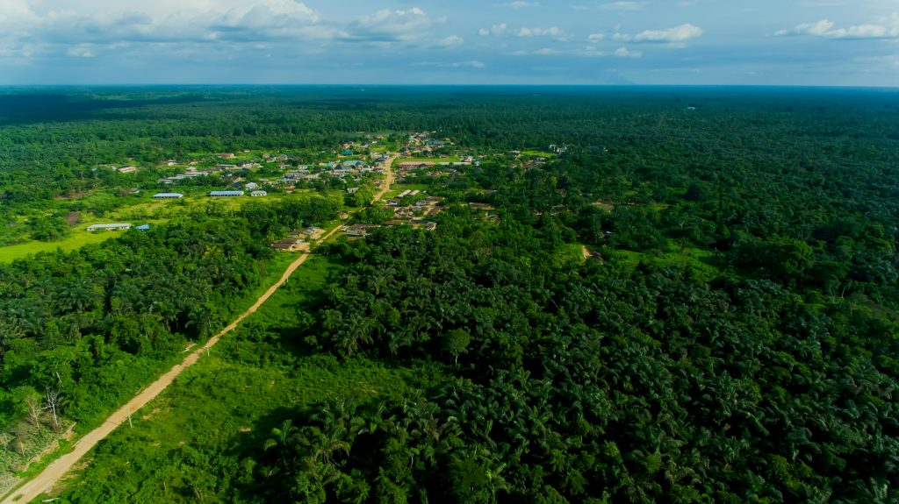

For centuries, trees have been doing the most important work on this planet without asking for a single naira in return. We thought it was time someone ran the numbers.

Imagine you hired a contractor. This contractor showed up every day without being called, worked through harmattan and rainy season without complaint, never asked for a salary review, never went on strike, and quietly performed about seven different jobs simultaneously. You would call that contractor a miracle. You would also, if you had any sense, do everything in your power not to lose them.
Now imagine that contractor has been working on your land, in your city, and across your country for hundreds of years without a single payment. No invoice. No late fee. No passive-aggressive email. Just continuous, silent, indispensable service delivered free of charge every single day.
That contractor is a tree. And we have been taking it spectacularly for granted.
We thought it was time someone drew up the bill.
Professional Services Invoice
Issued by: The Trees of Nigeria (Est. before recorded history)
| Service | Amount |
| 1. Water pumping services — Daily extraction and atmospheric release of up to 1,000 litres per tree. Includes cloud formation, rainfall contribution, and groundwater replenishment. Commercial borehole drilling and pump maintenance not included in this quote as we handled it ourselves. | Incalculable Per tree. Per day. |
| 2. Air conditioning (industrial scale) — Ambient temperature reduction of 2 to 8 degrees Celsius across canopy coverage area. Continuous operation, 24 hours a day, 365 days a year. No generator required. No diesel consumed. No NEPA bill. | You can’t afford it. |
| 3. Carbon storage and management — Long-term sequestration of atmospheric CO2 into wood, root systems, and surrounding soil. Note: upon forced early termination of contract (i.e. being cut down), all stored carbon will be returned to the atmosphere. We consider this a fair exit clause. | $50 per tonne Current carbon market estimate. Multiply by every tree ever cleared. |
| 4. Soil anchoring and erosion prevention — Root network deployment extending two to three times canopy width. Continuous topsoil retention against wind and rain. Replacement cost if soil is lost: several decades of waiting, as topsoil forms at approximately 1 centimetre per 1,000 years. We will not be rushed. | 3.5 billion tonnes Soil lost annually where we are absent. |
| 5. Flood damage prevention — Rainfall interception of 10 to 20 percent before ground contact. Root channel drainage to prevent surface runoff. Gully erosion suppression. You tend to notice this service only after we are gone and the floods arrive. | Billions, annually In damage prevented. For free. For centuries. |
| 6. Soil fertility maintenance — Annual leaf fall, decomposition, and organic matter contribution to topsoil. Fungal network maintenance connecting root systems across the forest floor. This is the service your fertiliser budget is trying to replace. It is not going well. | See fertiliser receipts For cost comparison purposes. |
| TOTAL OUTSTANDING | More than you can pay |
| Payment method accepted: Stop cutting us down. Plant more of us. Let the ones standing do their jobs. We will consider the account settled. | |
A Note From the Trees
We want to be clear. We are not asking for money. We have never asked for money. We are asking for something simpler: to be recognised as the infrastructure we are, rather than the obstacle people keep mistaking us for.
Every service on that invoice has been rendered in full, continuously, without interruption, since long before the first farm was cleared or the first road was built. We have watched cities grow around us. We have watched our colleagues get cut down to make way for things that lasted ten years while we would have lasted three hundred. We have continued working anyway.
Reality Check
The global value of ecosystem services provided by forests is estimated at over $2.5 trillion annually. Nigeria’s forests are part of that figure. We receive none of it. We continue anyway. But the account is not infinitely forgiving. Every tree lost is a service cancelled. And unlike a subscription, you cannot simply renew it next month.
The good news is that the payment terms are genuinely reasonable. No cash required. No government approval needed. No imported equipment. The trees of Nigeria are willing to keep working, keep pumping water, keep cooling the air, keep anchoring the soil, keep storing carbon, and keep holding the floods back. All they are asking is that we stop firing them.
Plant more. Clear less. Let the ones standing do what they have always done.
Invoice closed.
For now.